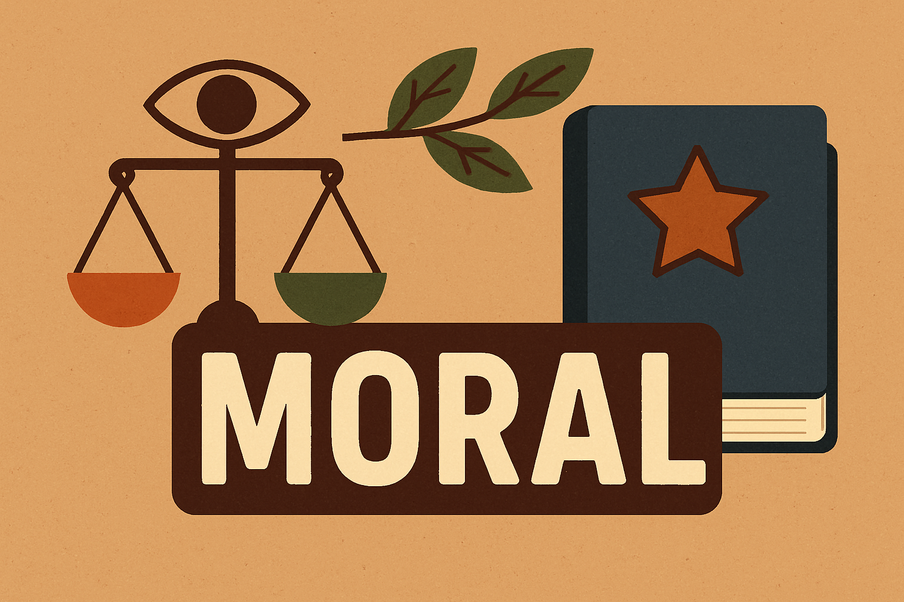

Filosofía
Filosofía
La filosofía ha sido fundamental en la historia de la humanidad, porque ayuda a responder preguntas sobre el sentido de la vida, la realidad, el conocimiento, la verdad y la moralidad. A través de la filosofía, las personas aprenden a reflexionar críticamente, a analizar sus creencias y a argumentar de manera lógica.
La filosofía fomenta la libertad de pensamiento y el respeto a la diversidad de ideas, lo que es esencial para el desarrollo de sociedades justas y democráticas.
Ética
La ética es una rama de la filosofía que se ocupa del estudio racional de la moral, el deber, la virtud, la felicidad y el buen vivir. Busca responder preguntas como: ¿qué es lo correcto? ¿qué es el bien? ¿cómo debemos actuar para ser mejores personas y contribuir a una sociedad justa?
Caracteristica
• Reflexiona sobre las normas que rigen el comportamiento humano.
• No impone reglas fijas, sino que invita a analizar críticamente cada situación.
• Es universal: la ética analiza lo que sería correcto para cualquier persona, sin importar cultura o religión.
Tipos de ética
• Ética normativa: busca establecer criterios para decidir lo que está bien y mal.
• Ética aplicada: estudia problemas concretos (ética médica, empresarial, ambiental, etc).
• Metaética: estudia el significado y el origen de los términos éticos.
Moral
La moral es el conjunto de principios, normas y valores que rigen el comportamiento de las personas en una sociedad determinada. Marca lo que la sociedad considera aceptable o inaceptable.
Caracteristica
• Es aprendida desde la infancia, en la familia, la escuela y la comunidad.
• Varía entre culturas, religiones y épocas.
• Se expresa a través de costumbres, leyes, códigos y tradiciones.
Diferencia con la etica
Mientras la moral es el conjunto de reglas concretas de una sociedad, la ética es la reflexión filosófica sobre esas reglas.
Axiología
La axiología es la rama de la filosofía que estudia los valores y juicios de valor. Analiza qué cosas son consideradas valiosas (belleza, justicia, verdad, amor, libertad) y por qué.
Característica
• Investiga el origen, la naturaleza y la jerarquía de los valores.
• Ayuda a entender por qué priorizamos ciertos valores sobre otros.
• Se aplica a todos los ámbitos: arte, política, ciencia, religión.
Ejemplos
Una persona puede valorar más la libertad que la seguridad, mientras que otra da prioridad a la seguridad.
La axiología estudia estos casos y cómo afectan las decisiones y conductas.
Tipos de valores
Valores morales: bondad, justicia, solidaridad.
Valores estéticos: belleza, armonía.
Valores económicos: utilidad, rentabilidad.
Valores sociales: igualdad, respeto, tolerancia.
Video explicativo sobre la ética y la filosofía de la conducta:
¿Cuáles son los valores morales?
Los valores morales son principios, creencias o cualidades que guían y orientan el comportamiento humano hacia lo que se considera correcto, justo o bueno en una sociedad. Funcionan como una brújula interna que ayuda a las personas a tomar decisiones responsables y a convivir en armonía con los demás.
¿Por qué son importantes los valores morales?
• Guían la conducta: Ayudan a distinguir entre lo que está bien y lo que está mal.
• Promueven la convivencia: Favorecen el respeto, la tolerancia y la cooperación.
• Fortalecen la identidad personal y social: Ayudan a las personas a definir quiénes son y en qué creen.
• Fomentan la responsabilidad: Impulsan a las personas a asumir las consecuencias de sus actos.